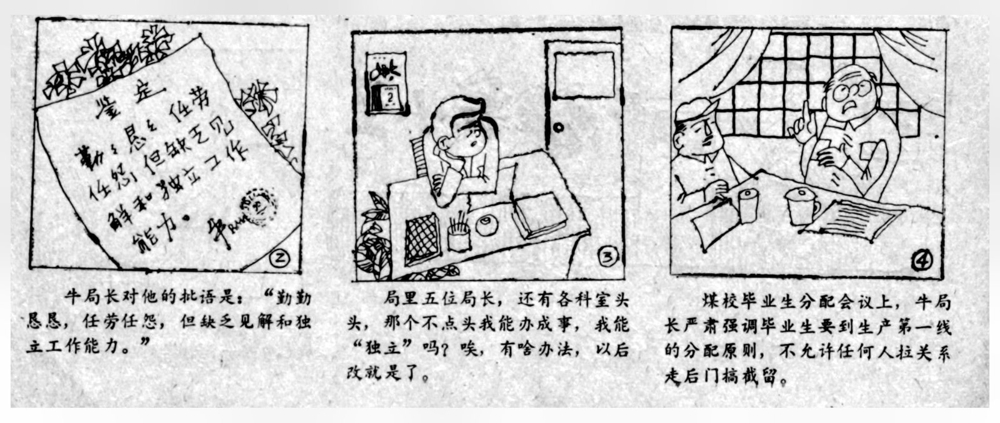

乃栋改编、绘画 《人事》1988年第5期（总第32期），第30页
秘书小王（续一）
Secretary Xiao Wang (continued, 1)
- Text in the drawing
- 鉴定 勤勤恳恳，任劳任怨，但缺乏见解和独立工作能力。
Evaluation: Diligent and conscientious, works hard without complaint, but lacks views of his own and the ability to work independently. - Panel text
- 牛局长对他的批语是：“勤勤恳恳，任劳任怨，但缺乏见解和独立工作能力。”
2. Bureau Chief Niu's written comment on him read: “Diligent and conscientious, works hard without complaint, but lacks views of his own and the ability to work independently.” - 局里五位局长，还有各科室头头，那个不点头我能办成事，我能“独立”吗？唉，有啥办法，以后改就是了。
3. Five bureau chiefs, plus the heads of every section and office — if any one of them doesn't nod, can I get anything done? Can I be “independent”? Oh well, what can I do — I'll just change from now on. - 煤校毕业生分配会议上，牛局长严肃强调毕业生要到生产第一线的分配原则，不允许任何人拉关系走后门搞截留。
4. At the meeting on assigning the coal-school graduates, Bureau Chief Niu sternly stressed the principle that graduates must go to the front line of production; no one was to use connections or the back door to keep graduates back.
- 牛局长对他的批语是：“勤勤恳恳，任劳任怨，但缺乏见解和独立工作能力。”
- Description
- Panels 2–4: the bureau chief's written evaluation of Wang; Wang at his desk reflecting that with five bureau chiefs he can't act “independently”; the chief laying down the rules at the graduate-assignment meeting.
- Artist
- Nai Dong 乃栋 (adapted and drawn)
- Published in
- 《人事》1988年第5期（总第32期）, p. 30
- Themes
- Paperwork and documents · Bureaucratism · Picture stories (连环画)

Cite
Nai Dong, “秘书小王（续一）” [Secretary Xiao Wang (continued, 1)], Renshi (Personnel) 《人事》, 1988, no. 5, p. 30.